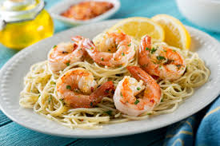

Shrimp Scampi

Description
Shrimp scampi is a delicious seafood dish with a taste profile
made up mostly of lemon, butter, and garlic. Fresh parsley and
red pepper flakes give it a kick!
The recipe is fairly simple and can be prepared in less than an hour.
Ingredients
- Spaghetti
- Fresh lemon
- Butter
- Olive oil
- Garlic
- White wine
- Fresh Italian parsley
- Red pepper flakes
- Deveined and shelled shrimp
Steps
- Set the spaghetti to boil in salted water. Strain after 8 or 9 minutes, reserving a cup of pasta water.
- Mince garlic and parsley.
- Heat olive oil in a large pan over medium-high heat.
- Once heated, add the shrimp into the pan. Do not crowd them and do multiple batches if necessary.
When the sides of the shrimp start turning white instead of gray, flip them. Remove after one minute and set aside.
- Reduce the pan's heat to medium low. Add in the garlic and red pepper flakes and cook, stirring frequently, just until fragrant.
- Deglaze with white wine and lemon juice and increase heat to medium. Add in butter and pasta water. Cook, stirring frequently, until thickened and alcohol has cooked off.
- Add the shrimp back to the sauce and stir to warm them through.
- Turn off the heat and add the pasta, parsley, and lemon zest. Mix to combine thoroughly and add salt and pepper to taste.
- Enjoy!
Home